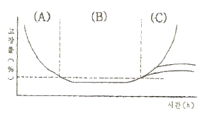
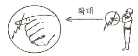
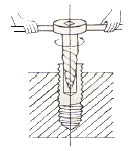
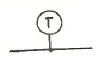
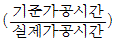
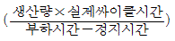
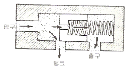
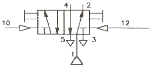
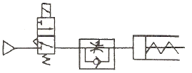
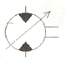

기계정비기능사 (2007-07-15 기출문제)
1과목: 임의구분
1. 그림에서 우발고장 시기는 (A), (B), (C) 부분 중 어는 부분인가? (단, X축은 시간(h), Y축은 고장률(%)이다.)

- (A) 부분
- (B) 부분
- (C) 부분
- (B), (C) 부분
(정답률: 83%)

2. 다음 중 배관용 공기구가 아닌 것은?
- 파이프 렌치(Pipe wrench)
- 오스터(Oster)
- 파이프 커터(Pipe cutter)
- 핸드 버킷 펌프(Hand bucket pump)
(정답률: 75%)
3. 그림과 같이 한쪽 손의 손가락을 밑으로 하여 새끼 손가락을 펴서 2∼3회 움직이는 수 신호법은 무엇을 의미하는가>

- 적은 수평이동
- 극히 적게 내리기
- 극히 적게 올리기
- 극히 적은 수평이동
(정답률: 86%)
4. 다음 송풍기 중에서 가장 크고 효율이 좋고 날개가 회전차의 회전방향에 대하여 뒤쪽으로 기울어져 있는 것은?
- 다익 송풍기
- 레이디얼 송풍기
- 한계부하 송풍기
- 터보 송풍기
(정답률: 85%)
5. 기어 감속기의 분류 중 평행축형 감속기가 아닌 것은?
- 윔기어
- 스퍼 기어
- 헬리컬 기어
- 더블 헬리컬 기어
(정답률: 88%)
6. 에방보전(장비)의 효과가 가장 큰 것은?
- 초기 고장기
- 우발 고장기
- 마모 고장기
- 돌발 고장기
(정답률: 68%)
7. 정비 자재 보충 방식에서 상비품 방식이 아닌 것은?
- 정량발주 방식
- 정액발주 방식
- 정기발주 방식
- 사용고발주 방식
(정답률: 63%)
8. 회전 도시 단면도에서 도형내의 절단한 곳을 90° 회전하여 표시할 때 그리는 선은?
- 회형선
- 가는 실선
- 은선
- 가상선
(정답률: 73%)
9. 정비용 재료 중 운동부에 사용되는 밀봉 재료는?
- 금속 가스킷
- 비금속 가스킷
- 액상 패킹
- 그랜드 패킹
(정답률: 68%)
10. 다음 그림에서 볼트가 밑부분에서 부러져 있는 경우에 어떤 공구를 사용하면 빼낼수 있는가?

- 스크류 엑스트렉터
- 파이프 렌치
- 스크류 바이스
- 포터블 드릴
(정답률: 84%)
11. 줄걸이 작업시 하물의 적치방법을 설명한 것 중 잘못된 것은?
- 다른 작업의 용이성을 고려해 와이어 로프를 빼 내기 좋게 놓을 것
- 정리정돈을 생각할 것
- 하물을 최대한 높게 쌓을 것
- 향시 안전하게 놓을 것
(정답률: 95%)
12. 설비의 이상상태를 정량적으로 측정하는 측정기기가 아닌 것은?
- 청음봉
- 베어링 체커
- 진동계
- 지시소음계
(정답률: 83%)
13. 정비 계획 수립시 전체 조건과 관계가 없는 것은?
- 수리 능력
- 수리 형태
- 생산 형태
- 생산 계획
(정답률: 47%)
14. 다음 그림은 계기의 도시 기호 중 무엇을 나타내는가?

- 일반계기
- 압력계
- 온도계
- 풍속계
(정답률: 89%)
15. 다음 중 열화 손실의 요인이 되지 않는 것은?
- 품질 저하
- 생산량 저하
- 원단위 증대
- 남기의 단축
(정답률: 75%)
16. 나사에서 M8×1은 무엇을 표시하는가?
- 나사의 유효지름이 8mm인 미터 가는 나사
- 나사의 피치가 8mm인 미터 가는 나사
- 나사의 바깥지름이 8mm인 미터 가는 나사
- 나사의 안지름이 8mm인 미터 가는 나사
(정답률: 72%)
17. 최고 재고량을 일정량으로 정해놓고 사용할 때마다 사용량 만큼을 발주해서 언제든지 일정량을 유지하는 방식은?
- 사용고 발주방식
- 상부품 발주방식
- 정기 발주방식
- 주문량 결정방식
(정답률: 81%)
18. 윤활관리의 효과가 아닌 것은?
- 윤활 사고의 방지
- 윤활비의 증가
- 기계정밀도와 기능 유지
- 보수 유지비의 절감
(정답률: 78%)
19. 다음 조업시간에 대한 구성내용을 설명한 것 중 틀린 것은?
- 무부하 시간: 기계가 정지하고 있는 시간
- 정미 가동시간: 기계를 가동하여 직접 생산하는 시간
- 정지시간: 조업시간 내에 전기, 압축기 등의 정지로 인한 작업불능시간
- 부하시간: 정미 가동시간에 정시시간을 부가한 시간
(정답률: 61%)
20. 타이밍 벨트의 특징을 설명한 것 중 틀린 것은?
- 폴리와의 미끄럼이 거의 없다.
- 회전비가 정확하다.
- 정밀 고속전동에 사용된다.
- 길이를 조절할 수 있다.
(정답률: 66%)
2과목: 임의구분
21. 도면에 반드시 마련해야 하는 사항이 아닌 것은?
- 표제란
- 재단 마크
- 윤곽선
- 중심 마크
(정답률: 89%)
22. 윤활제의 공급 방식 중 비순환 급유법에 해당하는 것은?
- 사이핀 급유법
- 비말 급유법
- 강제순환 급유법
- 원심 급유법
(정답률: 61%)
23. 도형의 표시 방법에 대한 설명이다. 틀린 것은?
- 조립도 등 주로 기능을 표시하는 도면에서는 물체가 사용되는 상태로 그린다.
- 일반적인 도면에서는 물체의 특징을 잘 나타내는 상태를 정면도에 그린다.
- 서로 관련되는 관계도의 배치는 가급적 숨은 선을 사용하여 그린다.
- 특별한 이유가 없는 경우에는 대상물을 옆으로 길게 놓은 상태에서 그린다.
(정답률: 63%)
24. 배관계통의 정비를 위하여 분해할 필요가 있는 곳에 연결하는 배관용 부품은?
- 유니온
- 엘보우
- 크로스
- 레듀서
(정답률: 72%)
25. 축 고장을 일으킬 수 있는 경우가 아닌 것은?
- 축계 부품과 조립의 불량
- 축 재료의 강도가 강할 때
- 갑작스런 충격 하중
- 축이음에서 두 축의 어긋남
(정답률: 88%)
26. 종합적 생산보전(TPM)에서 설비의 종합효율을 판단하는 자료는?


- 속도가동률×실질가동률
- 시간가동률×성능가동률×양품률
(정답률: 59%)
27. 주로 롤러 베어링, 볼 베어링의 방청과 크레인 등의 와이어 로프 등의 윤활 또는 방청용으로 사용되는 것은?
- 기화성 방청유
- 윤활성 방청유
- 와세린 방청유
- 방청 그리스
(정답률: 39%)
28. 설비관리의 궁극적인 목표를 나타낸 것으로 옳은 것은?
- 효율성 향상
- 윤활성 방청유
- 안전성 향상
- 보전성 향상
(정답률: 36%)
29. 고장의 원인이 되는 모드와 메카니즘을 발견하여 이것을 배제, 중단하기 위한 방법과 거리가 먼 것은?
- 강도, 내력을 향상시킨다.
- 응력(stress)을 집중시킨다.
- 공구, 치구를 개선한다.
- 작업방법, 조건을 개선한다.
(정답률: 86%)
30. 수리시간 단축을 위한 활동과 거리가 먼 것은?
- 고장진단의 연구
- 부품 교환방법의 연구
- 예비품 관리
- 수리할 때 오버홀 실시
(정답률: 89%)
31. 다음 중 축압기의 기능과 거리가 먼 것은?
- 부하 관로의 기름 누설의 보상
- 온도 변화에 따른 기름의 용적 변화의 보상
- 쿠션 작용
- 유체의 축적
(정답률: 53%)
32. 다음 중 액추에이터의 속도를 조절하는 밸브는?
- 감압 밸브
- 유량제어 밸브
- 방향제어 밸브
- 압력제어 밸브
(정답률: 78%)
33. 작동유의 유온이 적정 온도 이상으로 상승할 때 일어날수 있는 현상이 아닌 것은?
- 윤활상태의 향상
- 기름의 누설
- 마찰부분의 마모증대
- 펌프효율저하에 따른 온도 상승
(정답률: 86%)
34. 다음은 고정 오리퍼스와 스프링을 이용하여 유량을 제어하는 것을 나타내고 있다. 이 밸브 명칭은?

- 바이패스식 유량 제어 밸브
- 유량 제어 서어브 밸브
- 스로틀 앤드 체크 밸브
- 2방향 제어 밸브
(정답률: 63%)
35. 그림의 연결구를 표시하는 방법에서 틀린 부분은?

- 공급라인: 1
- 제어라인: 4
- 작업라인: 2
- 배기라인: 3
(정답률: 69%)
36. 공기 탱크의 기능이 아닌 것은?
- 압축기로부터 배출된 공기압력의 맥동을 평준화한다.
- 다량의 공기가 소비되는 경우 급격한 압력 강하를 방지한다.
- 주위의 외기에 의해 냉각되어 응축수를 분리 시킨다.
- 정전에 의해 압축기의 구동이 정지되었을 때 공기를 차단한다.
(정답률: 66%)
37. 유압 실린더의 중간 정지에 사용되느느 4/3way 방향 제어 밸브 붕 가장 확실한 정지가 가능한 형식은?
- 세미 오픈 센터형
- 클로즈드 센터형
- 오프 센터형
- 탱크 클로즈드 센터형
(정답률: 84%)
38. 적은 기름으로 급속 이동 효과를 얻는데 꼭 필요한 회로는?
- 동조 회로(synchronizing circuit)
- 차동 회로(differential circuit)
- 고정 회로(locking circuit)
- 2단 스피드 회로(2-speed circuit)
(정답률: 59%)
39. 그림과 같은 회로에서 속도 제어밸브의 접속 방식은?

- 미터 인 방식
- 블리드 오프 방식
- 미터 아웃 방식
- 파일럿 오프 방식
(정답률: 66%)
40. 다음 중 유압의 특성이 아닌 것은?
- 무단변속이 가능하고 정확한 제어가 가능하다.
- 과부하에 대한 안전장치가 간단하고 안전성이 좋다.
- 마찰 손실이 적고 효율이 좋다.
- 먼 거리까지도 이송이 가능하다.
(정답률: 60%)
3과목: 임의구분
41. 방향제어밸브의 분류에 해당 되지 않은 것은?
- 밸브의 조작방식
- 밸브의 기능
- 밸브의 구조
- 밸브의 연결방식
(정답률: 57%)
42. 공기압 발생 장치에서 보내온 공기 중에는 수분, 먼지 등이 포함되어 있다. 이러한 것들 막기 위해 설치하는 것을 무엇이라 하는가?
- 압축공기 조절기
- 압축공기 필터
- 압축공기 윤할기
- 압축공기 드라이어
(정답률: 94%)
43. 유량제어 밸브에 해당하는 것은?
- 교축 밸브
- 강압 밸브
- 시퀀스 밸브
- 릴리프 밸브
(정답률: 55%)
44. 유압펌프의 종류 중 가장 고압 사용에 알맞은 것은?
- 나사 펌프
- 기어 펌프
- 베인 펌프
- 플런저 펌프
(정답률: 55%)
45. 유압모터를 선택하기 위한 고려사항이 아닌 것은?
- 체적 및 효율이 우수할 것
- 모터의 외형 공간이 충분히 클 것
- 주어진 부하에 대한 내구성이 클 것
- 모터로 필요한 동력을 얻을 수 있을 것
(정답률: 87%)
46. 다음 중 공압 모터의 장점인 것은?
- 에너지 변환 효율이 높다.
- 배기음이 작다.
- 정전시에 비상용으로 유효하다.
- 제어성이 우수하다.
(정답률: 69%)
47. 유압에서 이용되는 속도 제어의 3가지 기본 회로는?
- 미터인 회로, 미터아웃 회로, 록킹 회로
- 블리이드 오프 회로, 록킹 회로, 미터 아웃회로
- 미터 아웃 회로, 블리이드 회로, 록킹 회로
- 미터인 회로, 블라이드 오프 회로, 미터 아웃회로
(정답률: 72%)
48. 다음의 기호가 뜻하는 것은?

- 양방향 가변 용량형 공압모터
- 한방향 가변 용량형 공압 압축기
- 양방향 가변 용량형 유압모터
- 양방향 가변 용량형 유업펌프
(정답률: 63%)
49. 전기 안전대책의 기본 요건에 관계 없는 것은?
- 취급자의 자세 및 안전 지식
- 전기 설비의 안정망 설치
- 전기 설비 노출
- 전기시설의 안전 점검 확립
(정답률: 88%)
50. 와이어 로프의 절단하중이 600kg이고 안전하중이 100kg인 경우 안전계수는?
- 6
- 8
- 10
- 12
(정답률: 86%)
51. 개구부의 추락방지 대책이 아닌 것은?
- 보호구 착용
- 난간대 설치
- 감시인 배치
- 표지판 설치
(정답률: 72%)
52. 다음 중 공기보다 무거운 물질은?
- 수소가스
- 아세틸렌 가스
- 일산화 탄소가스
- 프로판 가스
(정답률: 58%)
53. 어느 일정한 기간(100만 시간)안에 발생한 상해 발생의 빈도를 나타낸 것은?
- 천인율
- 도수율
- 강도율
- 백분율
(정답률: 64%)
54. 안전 사고 방지의 5단계에 속하지 않는 것은?
- 안전한 행동
- 분석
- 조직
- 사실의 발견
(정답률: 49%)
55. 바닥에 통로를 표시할 때 사용하는 색깔은?
- 적색
- 흑색
- 흰색
- 청색
(정답률: 63%)
56. 사회 행동의 기본형태가 아닌 것은?
- 협력
- 개성
- 도피
- 대립
(정답률: 53%)
57. 보일러의 사용압력이 10kg/cm2, 최대 허용 압력이 40kg/cm2일 때 안전 밸브 작동압력이 최대 허용압력의 90%에서 동작되도록 하려면 안전밸브가 분출할때의 보일어 내의 압력은 얼마인가?
- 9kg/cm2
- 36kg/cm2
- 40kg/cm2
- 900kg/cm2
(정답률: 81%)
58. 다음 중 재해방지 기본원칙에 해당 되지 않는 것은?
- 대책 선정 원칙
- 손실 우연 원칙
- 예방 가능 원칙
- 통계의 원칙
(정답률: 68%)
59. 요율적인 안전 관리를 위해서는 4가지 기본 관리 사이클을 갖춰 활동을 되풀이한다. 다음 중 안전관리 사이클 요소가 아닌 것은?
- 계획(plan)
- 청결(clean)
- 실시(do)
- 조치(action)
(정답률: 62%)
60. 사업주가 당해 사업장의 근로자에 대해여 안전 및 보건에 관한 교육을 실시하는 경우가 아닌 것은?
- 근로자를 채용할 때
- 작업내용을 변경할 때
- 유해 또는 위험한 작업에 근로자가 작업할 때
- 불량이 발생할 때
(정답률: 82%)
이유는 그림에서 (B) 부분에서 고장률이 급격하게 상승하는 것을 볼 수 있습니다. 이는 우발적인 고장이 발생했음을 나타냅니다. (A) 부분에서는 고장률이 조금씩 상승하고 있지만, (B) 부분에서는 급격하게 상승하고 있으며, (C) 부분에서는 고장률이 안정화되어 있습니다. 따라서, 우발고장 시기는 (B) 부분입니다. (B), (C) 부분은 고장률이 안정화되어 있으므로 우발고장 시기가 아닙니다.